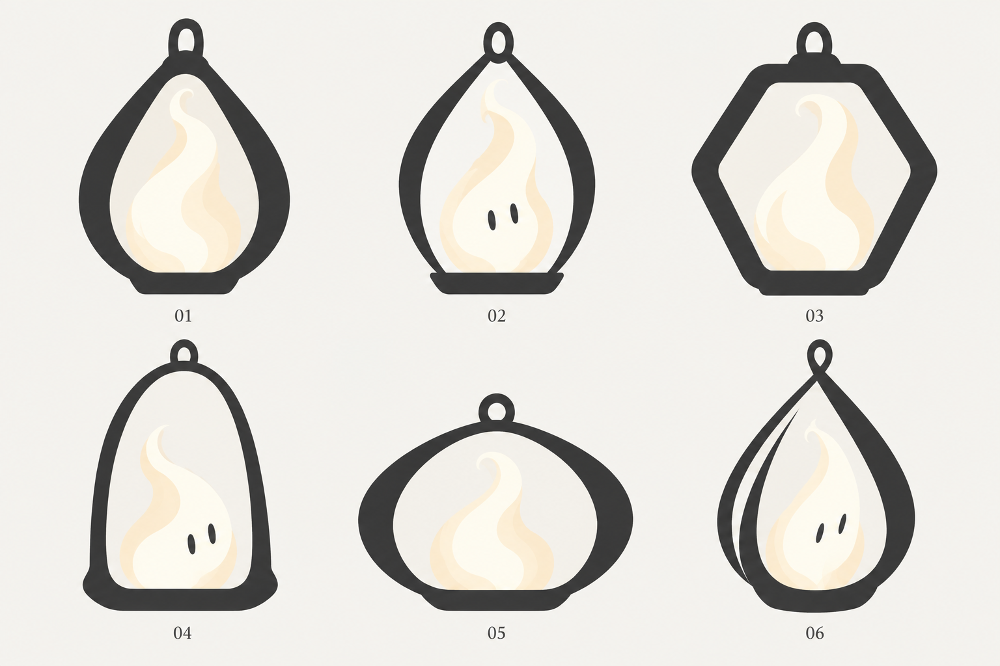

Contour vivant
Contour continu de goutte, fin mais lisible, flamme ample et base plate.
Goutte compacte et base nette. Le contour reste assez épais et domine le cœur ; sans yeux, la présence est surtout suggérée par la flamme.
Six mutations de la piste 08, avec appuis des 02 et 03. La flamme habite un contour graphique. Chaque proposition possède une assise et une attache de suspension ; une illustration par proposition.

Contour continu de goutte, fin mais lisible, flamme ample et base plate.
Goutte compacte et base nette. Le contour reste assez épais et domine le cœur ; sans yeux, la présence est surtout suggérée par la flamme.
Deux montants souples distincts, cadre ouvert et assise compacte ; cœur expressif.
Cadre plus léger, flamme large et deux yeux discrets. L’équilibre entre lanterne et compagnon est plus direct ; l’anneau et les montants restent à réduire/tester à petite taille.
Silhouette hexagonale compacte avec coins souples et flamme centrale presque entière.
Hexagone clairement distinct, forme stable et structurée. Le cadre reste massif et l’expression plus faible sans regard ; bonne piste de rigueur à confronter au potentiel joueur.
Arche haute ouverte, peu de matière apparente, flamme lisible sans grande cage.
Arche haute, cœur calme avec regard et base large. Le vide au-dessus peut affaiblir la présence et la forme peut évoquer une cloche ; suspension très lisible.
Enveloppe arrondie basse, bord continu épais ; se tasse sans perdre sa silhouette.
Forme basse et souple, favorable au tassement et au repos. Risque de silhouette trop générique/anse de sac ; sans regard, moins incarnée.
Deux bandes dessinent un berceau et une ouverture haute, base stable, cœur attentif.
Asymétrie et regard donnent une attitude attentive. Le contour commence à se croiser et son côté gauche devient fin : risque de lisibilité et de pseudo-volume, à simplifier.
Potentiel confirmé : posé, des pieds peuvent apparaître pour marcher ; suspendu, il peut se balancer, tomber ou rester immobile ; la chauffe le fait flotter ou voler. Ces mouvements restent à développer. Les pieds ne sont pas dessinés dans ces poses au repos.
Cette planche réduit la matière, sans figer la palette. Favicon et animations non testés. Quel contour sert le mieux ce compagnon ? Indique le numéro et les éléments à conserver ou simplifier. Réponds dans le chat ; cette page ne sauvegarde pas de choix.
Imagegen intégré, référence structurelle r003, prompt exact conservé dans prompt.txt ; aucune retouche.